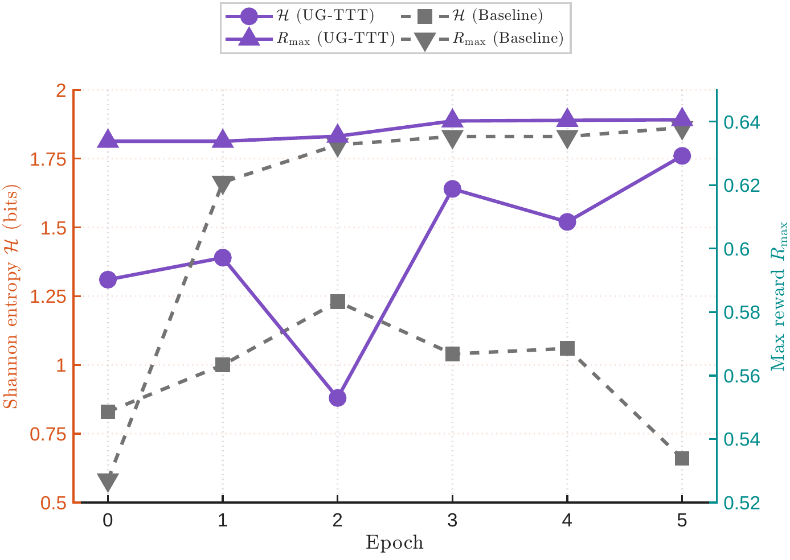
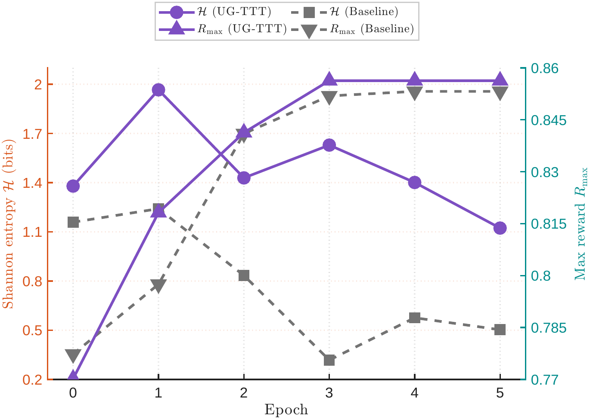
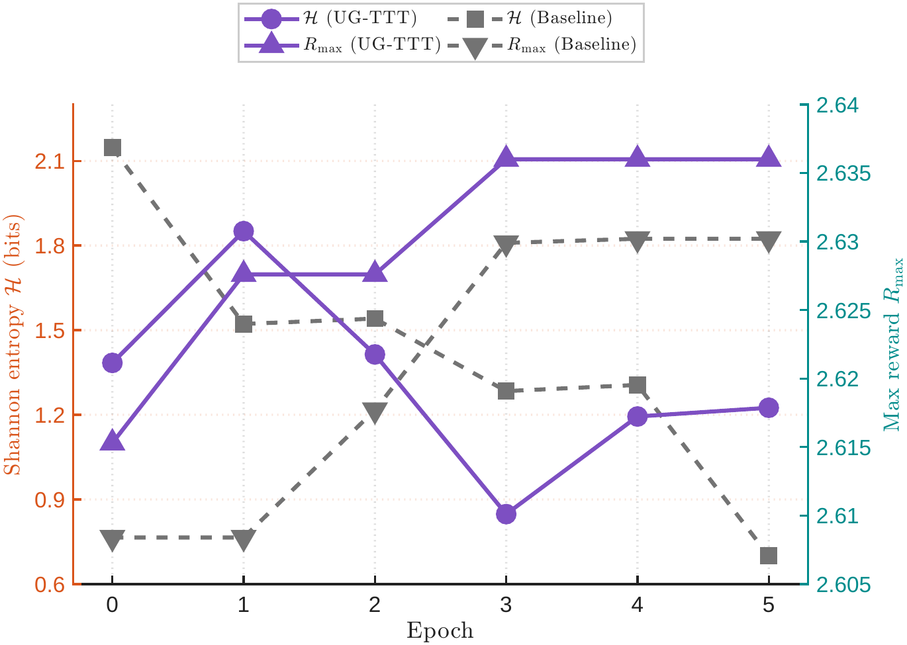
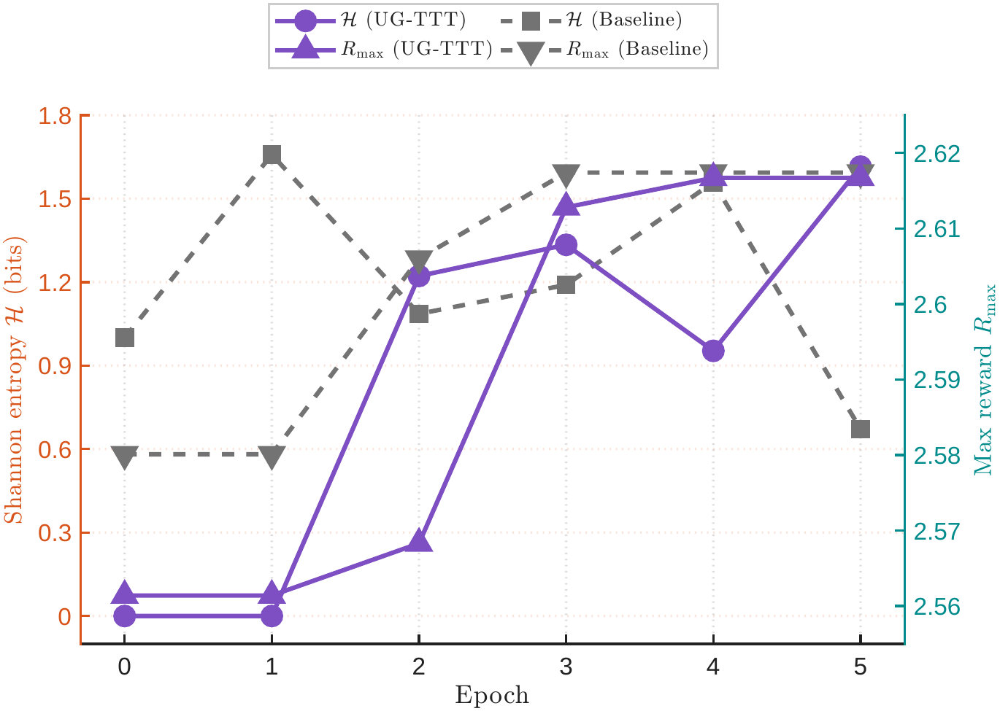
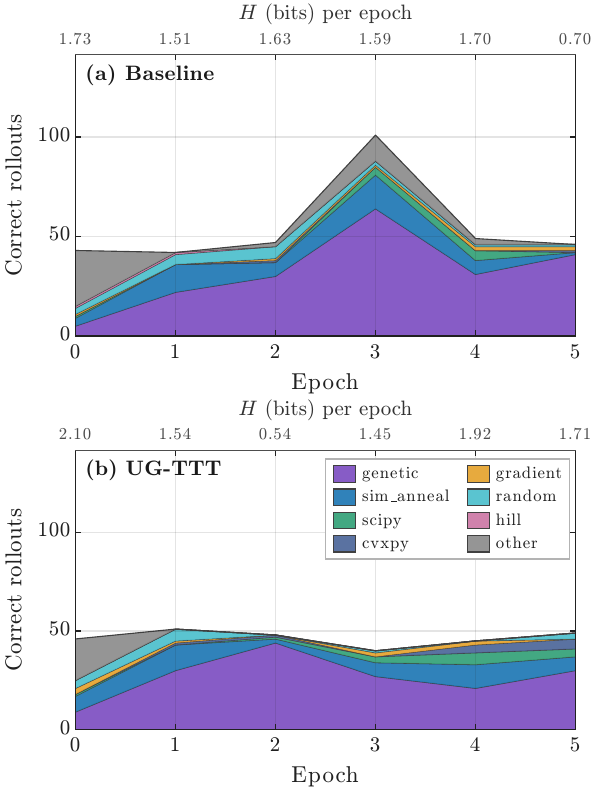
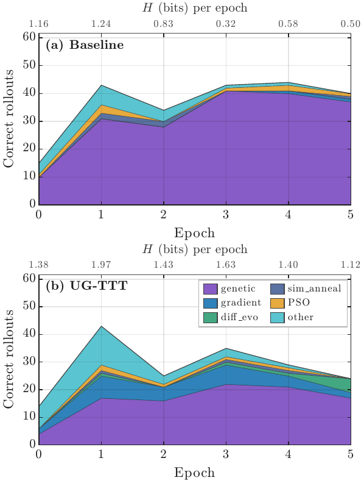
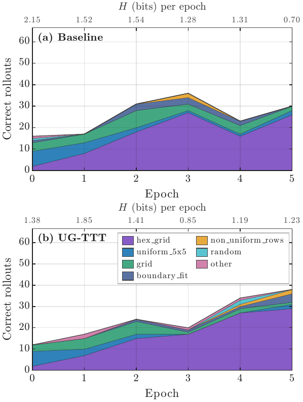
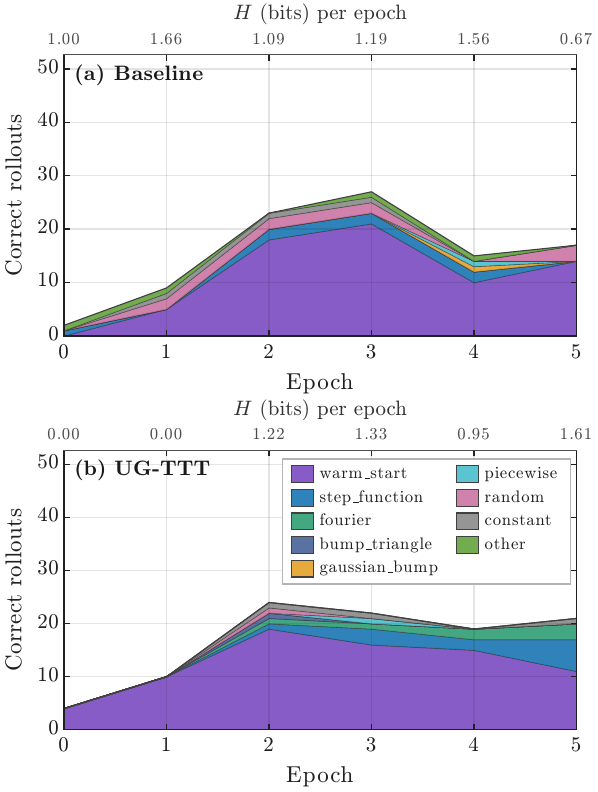

Abstract
Automated scientific discovery using large language models relies on identifying genuinely novel solutions. Standard reinforcement learning penalises high-variance mutations, which leads the policy to prioritise familiar patterns. As a result, the maximum reward plateaus even as the average reward increases. Overcoming this limitation requires a signal that distinguishes unexplored regions from intrinsically difficult problems, which necessitates measuring disagreement across independently adapted weight hypotheses rather than relying on a single network's confidence.
UG-TTT addresses this challenge by maintaining a small ensemble of low-rank adapters over a frozen base model. The per-token disagreement, quantified as the mutual information between ensemble predictions and weight hypotheses, isolates epistemic uncertainty and identifies positions where insufficient coverage leads to adapter divergence rather than intrinsic problem difficulty. This measure is incorporated as an exploration bonus into the policy gradient, directing the policy toward positions where persistent adapter disagreement signals low training coverage, the same frontier where genuine discovery is possible. A nuclear norm regularizer ensures the adapters remain distinct from one another, thereby preserving the exploration signal throughout training.
Across four scientific discovery benchmarks, UG-TTT increases the maximum reward on three tasks, maintains substantially higher solution diversity, and an ablation study confirms that the regularizer is essential for sustaining exploration.
Method
UG-TTT augments test-time RL with three ingredients:
- LoRA ensemble. A small set of low-rank adapters over a single frozen base model produces multiple weight hypotheses at near-zero memory overhead.
- Mutual-information exploration bonus. Per-token disagreement between adapters, measured as the mutual information between ensemble predictions and weight hypotheses, isolates epistemic from aleatoric uncertainty and is added to the policy-gradient reward.
- Nuclear norm regularizer. An explicit diversity term on the stacked LoRA weights prevents the adapters from collapsing into the same hypothesis, keeping the exploration signal alive across training.
Results
UG-TTT improves the maximum reward on three of four scientific discovery benchmarks and maintains substantially higher solution diversity throughout training. Below, per-epoch Shannon entropy over solution families shows that the baseline collapses to a single family while UG-TTT preserves a multi-modal mixture.

(a) AC1

(b) AC2

(c) CP26

(d) Erdős

(a) AC1

(b) AC2

(c) CP26

(d) Erdős
BibTeX
@inproceedings{riaz2026ugttt,
title = {Epistemic Uncertainty for Test-Time Discovery},
author = {Riaz, Kainat and Mohsin, Muhammad Ahmed and Bilal, Ahsan and Umer, Muhammad and Mohsin, Ayesha and Riaz, Aqib and Subhan, Ali and Cioffi, John M.},
booktitle = {Submitted to the 40th Conference on Neural Information Processing Systems (NeurIPS 2026)},
year = {2026},
url = {https://kainatriaz98.github.io/uncertainty-guided-ttt/}
}